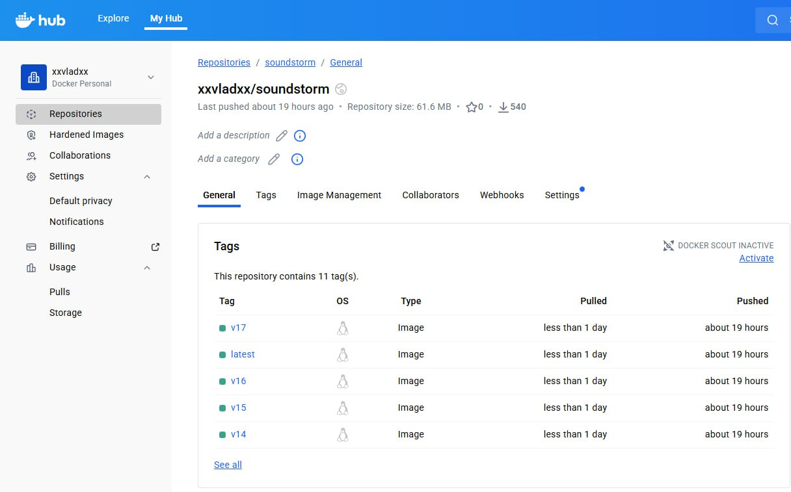
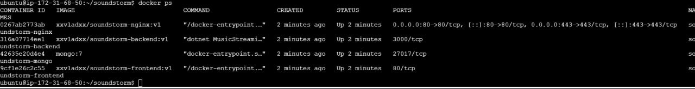
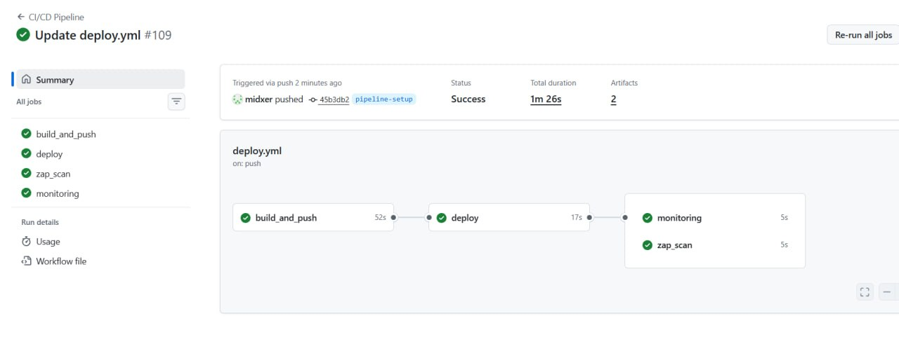
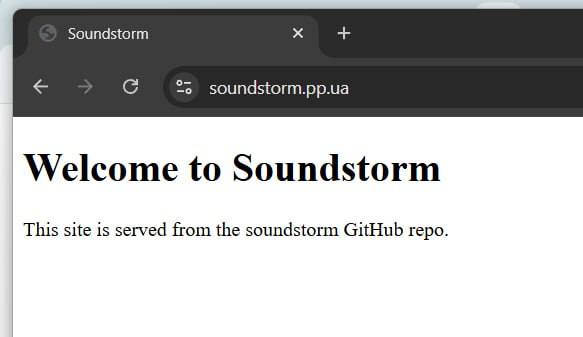
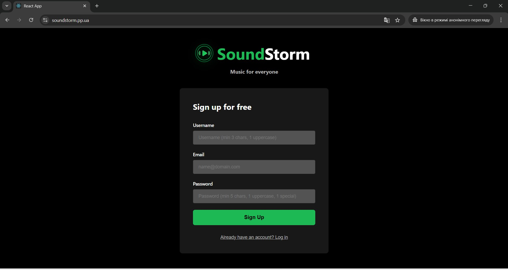
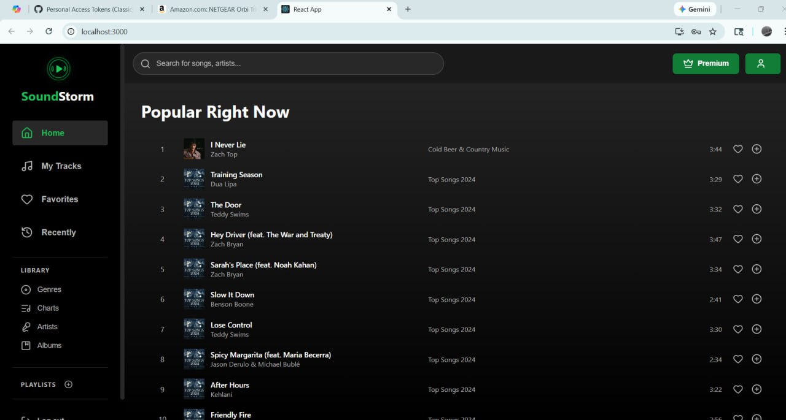

About the Project
SoundStorm was a graduation project developed by a seven-person team consisting of developers, designers, and infrastructure contributors.
I worked closely with another graduating colleague on the DevOps and infrastructure side of the project. Together, we worked on the deployment environment, cloud infrastructure, domain setup, containerization, and CI/CD pipeline implementation.
The work covered the process from initial infrastructure preparation and domain registration through application deployment and automated pipeline builds.
Team
Seven-person graduation project. DevOps responsibilities shared with one colleague.
Cloud Infrastructure
AWS EC2 virtual machine instances providing computing resources.
Main Focus
Infrastructure setup, container deployment, web services, and CI/CD automation.
AWS EC2 — IaaS Deployment
AWS EC2 was used to provide the computing infrastructure for the project. This is an Infrastructure as a Service (IaaS) deployment model.
Instead of relying on a fully managed application platform, we worked with virtual server instances and configured the software environment required to run the application.
Infrastructure responsibilities
- Working with AWS EC2 computing instances.
- Preparing the server environment for application deployment.
- Configuring the domain and DNS-related setup.
- Coordinating infrastructure requirements with the development team.
Docker & Docker Compose
Docker was used to package and run application services in containers. Docker Compose helped define and coordinate the services required by the deployment environment.
Developing the Docker Compose configuration was one of the practical challenges of the project. We had limited previous experience with scripting and infrastructure configuration, so much of the process involved learning the syntax, understanding service dependencies, and investigating errors during deployment.
Technologies involved
- Docker container management.
- Docker Compose configuration using docker-compose.yml.
- MySQL database service.
- Nginx reverse proxy configuration.
- Apache web server.

Docker Hub
Docker-related project image and repository evidence.

Running Containers
Screenshot documenting the containerized application environment.
GitHub Actions & CI/CD
GitHub Actions was used to build the project's automated pipeline. The objective was to connect repository activity with the build and deployment workflow.
Implementing the pipeline required understanding how workflow configuration, Docker services, and the deployment environment interacted with each other.
What we worked on
- GitHub repository and project workflow setup.
- GitHub Actions workflow configuration.
- Pipeline builds and execution.
- Investigating failed workflow runs and configuration errors.
- Adjusting configurations and testing subsequent builds.

CI/CD Pipeline
GitHub Actions workflow evidence from the SoundStorm project.
From First Deployment to Working Application
The project evolved through multiple development and deployment stages. The first successful deployment was very basic, but it marked an important milestone: getting the initial website served through our infrastructure.
As development continued, the application and deployment environment became more complete through collaboration between the development and infrastructure sides of the team.

First Deployment
The initial, minimal website deployment. A starting point for testing the infrastructure.

Application Development
A later stage of the SoundStorm application.

Working Application
Application interface during the later stages of project development.
Learning Through Implementation
One of the biggest challenges was that we were learning several technologies while building the deployment environment. Neither of us started with extensive scripting or programming experience.
AI-assisted tools helped us generate initial configuration examples and code. However, generated configurations did not always work as expected.
We had to investigate errors, understand configuration problems, modify files, and rerun builds when Docker deployments or CI/CD pipelines failed.
Practical experience gained
- Understanding how cloud infrastructure supports application deployment.
- Working with Docker and multi-service Compose configurations.
- Understanding relationships between web servers, databases, and containers.
- Building and troubleshooting GitHub Actions workflows.
- Investigating configuration errors and deployment failures.
- Collaborating with developers and designers in a seven-person team.
- Using AI-generated configuration as a starting point and validating the results.
What This Project Demonstrates
SoundStorm provided practical exposure to cloud computing, infrastructure configuration, containerized deployment, and CI/CD automation.
It also provided experience working through real configuration and deployment problems in a collaborative technical environment.
Technologies and tools
AWS EC2 · Docker · Docker Compose · Docker Hub · MySQL · Nginx · Apache · Git · GitHub · GitHub Actions · DNS · CI/CD